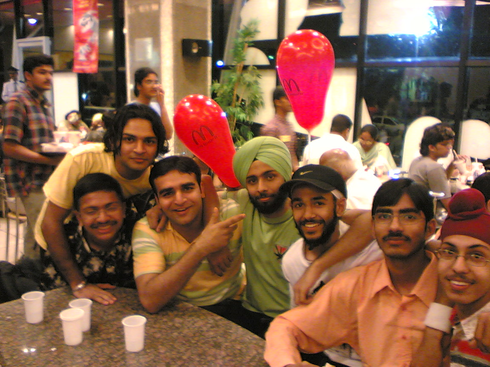
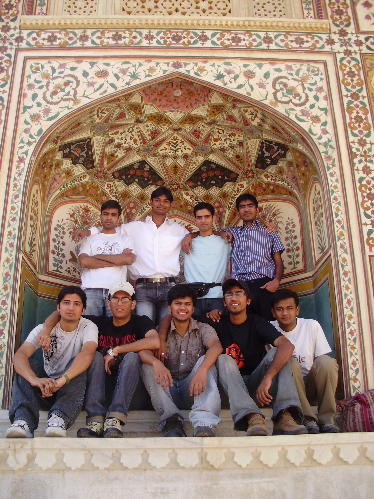

The Yearbook - Commemorating 2005-09!
Sachin's profile information
Name - SachinBirthday - 13th July 1987
Email - sachinfor42@yahoo.co.in
Address - c/o S.k.Enterprises, Near Bus Stand , Manendragarh Distt Koriya Chattisgarh 497442
Phone - 07771242417
Webpage - Link
Hobbies - Movies, BC , sleeping
WishList - Winona Ryder ;)
Memorabilia - Felicity'08 Last night
What would you want to be remembered as - icshan
Future Plans - Job if manage to get an offer letter ;)
Testimonials written by Sachin
Sachin's Album

.jpg){kind=link}
Default caption

{kind=link}
Default caption

Default caption
Testimonials
Abhishek Sainani wrote-Don't remember when I first met him, but remember his great collection of movies under the name Icshan in DC++. He has spent his life in IIIT, both as a successful downloader, as well as a successful gamer (both online and onfield).
He's a great guy, fun loving and a great peer. His friends love him a lot!!
I like his freestyle attitude a lot!
 Lately I have realized/learnt that he's quite a sensitive person as well.
Lately I have realized/learnt that he's quite a sensitive person as well. 
He loves doing gossip and is a great watcher (I mean movies and TV shows.
 ).
).
He used to threaten Mohit for a good grade in DWDM!
All the best for future, I'm sure it'd be much better, although not the same as these college days!
Kabeer Singh wrote-
aka bindaas ekdum bindaas banda , tension nahi lene ka.
He was my first friend in IIIT. We took a room in cellar and that's when it all started. Raat bhar BC in saini's room, long walks, Punjabi Rasoi, Banga ko tang karna, movies in Akansh bhaiya's room, and so on. Classes mein late aakar sirf phots leni
.
He is a good shooting guard with an excellent conversion rate. Isne agar apne area (60deg to 120deg) se shot maari , to jayegi jayegi.
Bahut aalsi banda hai , mast coding karta hai aur haan CZ mein I_AM_HERE banke bahut maara hai isme mujhe.
Talk about movies , hindi or English, new or old , sab dekhi hai isne. Chalta firta IMDB.
We went to 3 trips together (Blore, Kerala and Ooty , Sikkim). There was chic in Sikkim , woh to iske peeche hee padh gayi thee. Number and address bhee le leeya tha. Try daddu kar raha tha , number iska le gayi thee.
.All 3 trips were total fun.
Bindaas hai , aur bindaas rehna. Just remain as you are.
All the very best for your future (dun worry there r loatsa chics in blore)
Raman Jain wrote-
Sachin bhai ....
I've never talked to him for the first couple of year, but after when we moved in OBH, We started talking to each other.. He is a great guy, smart and good looking coupled with a trendy hairstyle..
he becames very active( rest time he sleeps
) when it comes to leofying someone .. aur bahut maje se sabki marta hai (meri bhi
.. aur bahut maje se sabki marta hai (meri bhi  ) and that is how we became friends ... banda dil ka ultimate hai .. aur senti bhi bahut hota ... humesha mujhe daru peene ke liye bolta... sahi me sachin bhai ... I'll miss you alot.. I wish I could go to past and spend some more funny and quality time with you ...
) and that is how we became friends ... banda dil ka ultimate hai .. aur senti bhi bahut hota ... humesha mujhe daru peene ke liye bolta... sahi me sachin bhai ... I'll miss you alot.. I wish I could go to past and spend some more funny and quality time with you ...
Bhool mat jaiyo dude!!
Best of luck for your future!!!
Keep in touch!!!
Kubera Samrat wrote-
He is one fo the chocolate boys of IIIT. I wonder how jrs missed him in that category. We have done NLP project. I managed to get a reasonable grade only because of him. He gave instinctive answers in the presentation. We played cricket in OBH and when he hits six he gives a peculiar childish, innocent smile like that of SRT. He has great communications skills and knowledge. Because of that he cleared interview in the first attempt.
My best wishes for your better future.
Ajay Somani wrote-
Part 2
Another thing to notice about him is his knowledge about movies/songs etc. He's watched more movies then I know the names of and has knowledge of almost all the hindi songs of recent times. Usually wins in Antakshari, Dumbcharads and such competitions all the time. I wish he was from Vayu house
.
I think he's really emotional at the core. You can know about it from his activities after he gets drunk ;-), although I havent had a chance to be with him during any of those occasions, but thats what others say
.
He is also one of the guys who will help me whenever I need it. Remember that Veshno Devi trip, I was too slow in climbing and he was the one who stayed with me for most of the time and encouraged me to complete it
. Many thanks for that buddy  .
.
I hope I will come to blore soon and we'll see each other as often as in college
.
Will Miss you for: AOE/BC
Most Memorable Moments: Veshno Devi Trip, Summer 07 fun and everyday BC.
Ajay Somani wrote-
Part 1
Sachin Goyal ( nick: icsahn ), also known as Keechad-Kood ( KK in short ) is a very friendly person. He really likes to enjoy his life and is a great person to make friends with. Its usually a lot of fun when he's around.
I first met him in first year because of AOE
. We used to play lots of games in first year. Still remember those days . I didnt have much interaction with him apart from playing AOE together. 2 years passed like this.
Then came summer 2007, I had more interaction with him. We and other friends used to spend major part of the day ( except sleeping time ) together playing CS all night, then playing VB in the morning. Eating a heavy breakfast, sleeping and then getting up to do BC at college and going to some nice place for dinner, and back to CS again. Those were some of the best fun filled days I had in college. He's an extremely good CS player and I could never match with him
.
Then comes third year, I shifted to NBH and took a room in front of his room. We have done some AOE and CS gaming together at room as well. I've been to many outings with him he's always ready to have fun with friends and a very jolly person.
Now in forth year, we have played lots of card games together
. Specially 29. He's really good at this game too.
Irrespective of all the fun, he's also pretty much a brainy guy. He likes to solve puzzles ( participated in all the cache-in during the various felicities that we had in our stay ). It is also supported by the fact that he managed to get a very good job even during these hard times. [ Don't worry you'll get your offer letter
].
One thing that we both match in is our laziness. Although people might argue ki I'm more lazy but yeh bhi kam nahi hai
 . He never likes to be waken up in his sleep, gets really angry when someone does that to him unnecessarily or even with a reason .
. He never likes to be waken up in his sleep, gets really angry when someone does that to him unnecessarily or even with a reason .Kiran Danduprolu wrote-
[Part 2 of 2]
It is due to him that I had my only Paintball experience in Felicity during our 2nd year. [It was one moment I will cherish because it was unique]. His coolness can be seen in his dance which he did right before Venkaiah sir after he was assured that he will be given a average-to-minimum grade.
This guy was quite depressed by the fact that I was the only one who hasnt been placed yet and adviced me to do different things and ask help if necessary. All his good wishes and also others have come true when I got placed in DELL. He is quite helpful and is ready to help when needed. His talent is BB is also worth talking because he is by far the best shooter I have seen in IIIT.
And now that you are staying with Rahul I believe we will be in touch and Plz be careful of Rahul as he has learnt the art of Instantaneous Black Magic
. He will make sure that CITRIX wont cheat you so you have nothing to worry about financially. Wishing u all the best @ CITRIX and Bangalore ... Signing off ... Kiran Danduprolu. Kiran Danduprolu wrote-
[Part 1 of 2]
Sachin Goyal is one heck of a cool guy u'll ever see. I met him through kapil and Sambhav in NBH Cellar and soon we got along without any problem and I really admire his kind of life. He enjoys his life to the fullest without going down on other things. [Which can be best seen in the fact that he was placed far earlier than others in CITRIX].
He watches so many movies that even a movie addict like me should bow down to the master
. I love irritating this guy in dumb-c by giving the weirdest movie names to his teammates while enacting. His love for old classics made him a very famous downloader in 2nd Yr [Everyone knew Icsahn the downloader at that time in DC]. His movie reviews are quite good and very accurate.
He enjoys having fun to the core and is always ready for any kind of BC/fun/sport/Gaming Activity. An excellent AOE and CS player he is and I m afraid of him in both games[this is a secret] [Please do show "Mercy" on me in these games].
He is also a gr8 singer with a vast knowledge of Hindi songs and hence has won Antakshiri events many times in these 4 years. Of late he has been interested in Telugu songs too [appudo ippudo from Bomarillu is his favorite
].Sambhav Jain wrote-
Part1
"Shakal pe sharaarat likhi hai, aur baalon se hai bhoot !!
baat inki anokhi hai ,ye hain keechad kood !!! "
KeechadKood Jr.
... he is a person who everyone wanna be friend with ... his ability to spread fun and frolic is the reason why he is so sort after wheather it be any outing, coffee shop walk or group BC ...
Being in A4 and Cellar hum kaafi jaldi hi contact me aa gaye the and the knot has only tightened since then
... A4 ki English class me hum logon ne bahut bakar ki hai ...
Iska "sha" ko "sa" bolna aur Mrs. Rangnekar ka isko correct karna "Sachin say 'sha' .. say 'sha'.." was a kind of laughing medicine for all of us
 ...
...
Waise KK ka command pronunciation pe kuch jyada hi tagda hai fir wo chahe antaksCHadi ho.. ya dudu ..ya fruit chit
 ... KK ke patent steps includes the waist twist , the jerky hands up , Hey-Baby Dance step ...
... KK ke patent steps includes the waist twist , the jerky hands up , Hey-Baby Dance step ...
Hum kai kaamon me saath rahe hain ... physics presentation .. Shalabh sir ki tute
... jeevan vidya ... infact leave that the heights were jab Rohit Gupta  ne so called interactive session ke liye bulaaya tha and the 3 unlucky were he, me and tava
ne so called interactive session ke liye bulaaya tha and the 3 unlucky were he, me and tava  ...
...
Cellar played an important role in our bonding ... after changing his room to C2 he was the guy next door
... half of the time I used to be in his room and the other half in C9 (The 2 bakar zones) ... BC night-outs, DumbC, the cards session , cricket session were the some of the highlights ...
We organised Antakshari during Felicity, participated in the next one
... his GK in songs is superb ... when comes to movies it seems that it is his homeground ... he has a commendable and vast knowledge of movies ..infact its better to call him "walking IMDB" ... if you are playing DumbC having Sachin in your team is a great advantage  !!
!!
Cont...
Sambhav Jain wrote-
Part2
Janaab ka aalas IIIT ke kone kone me mashoor hai
... KK ko uski jagah se hilaana matlab 'Mahabharat'(but can't beat Somani ) ... aur agar so raha hai tab to ye task "mushkil nahi namumkin hai" ...
A memorable moment was when he played a prank of waking me one night from deep sleep
 ... and I threatened him of the same when he sleeps ... darr ke maare ye darwaaza khol ke soya ki kahin darwaaza kholne ke liye uthna na pad jaaye !!!
... and I threatened him of the same when he sleeps ... darr ke maare ye darwaaza khol ke soya ki kahin darwaaza kholne ke liye uthna na pad jaaye !!!
BBall is another area of his expertise
... our house team's Captain (for shoots only ) ... I started playing the game just b'coz of him ... he used to back me even when I wasn't good in the art !!! ...
When it comes to cards specially 29 his legend is unforgettable
... 21-22-23-25-29 ... THE only daringbaaz to go to that extend ...
KK and Vig are the two people jo ki ghomne ke liya hamesha tayaar rehte hein
... Sikkim & Jaipur trip was possible because these two were the initiative takers ...
bande ke cool attitude ka kya kehna !! ... Sikkim ki ladkiyaan
 bhi "KK ki Koolness ki Kayal" ho gayi thi ... remember Sudeepa (or Sudeepta) {it took me days to recall the name } ... Namchi incident is one of the most humorous in last 4yrs ...
bhi "KK ki Koolness ki Kayal" ho gayi thi ... remember Sudeepa (or Sudeepta) {it took me days to recall the name } ... Namchi incident is one of the most humorous in last 4yrs ...
Coming to one more incident when I convinced the passengers that he is a handicap
just for the sake of the seat in MMTS ...
The best time with him was Summer'07
when we used to spend 18-19 hrs a day together ... used to play CS, VB, cricket ... the BC sessions abt future life ... Vindus me khaane jaana ... really miss those days ...
Cont...
Sambhav Jain wrote-
Part3
Banda peeta hai par darta bhi hai ... his usual request "yaar mein peeke out ho jaaon to sambhaal lena" ... ek-do baar isko
... remember the Coffee Machine incident ... and not to go very far ..just 2 days back 'Crying Sachin' was the icon of the party ... aur bhai jo ... infact itni english to isne Marathe mam ki class me bhi nahi bole ...
We did the placement prep together ... he was really focussed and serious ... and put a great effort
... at that time he played the "Serious Sachin" part and it paid ... it was a joyeous moment to see him and Bajaj go off the mark ...
part and it paid ... it was a joyeous moment to see him and Bajaj go off the mark ...
hmmm , going to Banglore ... good for me as I have promised him I'll visit him every weekend
... wheather you like or not .... go ahead with your "Red Swift" plan ... wish you progress so much that you can buy lot of Benz for your friends ...
gonna miss you a lot !!! a lot !!
-Sambhav
Randeep Singh Banga wrote-
neways today i'm happy for him...he has a good job in hands and a gf too....
he is a gr8 friend to have ...d times r still clear in my mind whn we used u watch movies at Akansh bhaiya's room...d BC we did at Pankaj's room...r ragging stories (remember ur bathroom confession )...stories of him and Ankush sleeping all day...my b'day treat at McD...all d movie outings at IMax, PVR...our visit to Durgamcheru, d walk along d Hussainsagar, d walks to IndiraNagar...d Club8 dance...all of it was fun...i njoyed it though i was d prey most of d times .....finally i'm sorry 4 being away...but d time spent wid all u guys is unforgettable...its priceless...its not a farewell for us, its a reason for reunion... ...expecting u to make regular visits to Hyd...wil definitely KEEP IN TOUCH....wish all d best in life to a lovely friend...
Will miss u for: ur friendly presence, ur ironic taunts, plans for outings
Most Memorable Moment: BC at C9...
Message 4 u: don't u ever forget me...be d same jubilant person
Song 4 u: bholi si surat
Randeep Singh Banga wrote-
I wld like to share my experience on d day whn Citri
Cit) and CpitalIQ(Cap) were on d campus for recruitment. Sachin and rahul were both shortlisted in both d companies for interviews. I was handling Cap and Adi was looking after Cit people. Sachin was in his 2nd round of interview wid Cit and d Cap people were looking 4 him. I had delayed his interview sending in others in d queue. Worries and thoughts had crept in my mind . Sachin finished his 2nd round wid Cit. I smwhat wanted him to get through in Cit and not Cap. I thn called him for his interview with Cap. He came thr...Adi told me Sachin can hv his 3rd round wid Cit. I was in a fix shld I send him thr. Thr was a lil room to make Cap people wait.So Sachin went back to attend his 3rd round at Cit. Now it went a bit far delaying his int. wid Cap. But he was in d middle of his int on d other side. I was feeling guilty . By d time Sachin finished his int at Cit, 1st round team for Cap had left. I kept dis secret 4m Sachin. And by God's grace after his 3rd round he was immediately asked for his 4th round wid Cit. . After his 4th round at Cit, I told him tht he was no longer considered for Cap. But he was cool and happy wid his performance wid Cit. Now, I became even more desperate for his selection at Cit.
. Sachin finished his 2nd round wid Cit. I smwhat wanted him to get through in Cit and not Cap. I thn called him for his interview with Cap. He came thr...Adi told me Sachin can hv his 3rd round wid Cit. I was in a fix shld I send him thr. Thr was a lil room to make Cap people wait.So Sachin went back to attend his 3rd round at Cit. Now it went a bit far delaying his int. wid Cap. But he was in d middle of his int on d other side. I was feeling guilty . By d time Sachin finished his int at Cit, 1st round team for Cap had left. I kept dis secret 4m Sachin. And by God's grace after his 3rd round he was immediately asked for his 4th round wid Cit. . After his 4th round at Cit, I told him tht he was no longer considered for Cap. But he was cool and happy wid his performance wid Cit. Now, I became even more desperate for his selection at Cit.
And thr was another thorn in d way. Rahul was in d final rounds of both d companies
. It seemed he would get an offer from both. Chances were strong tht Cit would give only 1 offer. Results were being discussed by Cit people. Rahul was in his final HR round at Cap. There was an argument b/w me and Adi abt wat course of action to take in d various cases arising of d situation. Finally d news came tht both Rahul and Sachin were offered a job by Cit . It was a huge relief for me. I ran down to d room whr Rahul was being interviewed and told d Cp people tht he's no longer available 4 dem. I can't really express my happiness at tht time . But yes, dis was d time when i had tried to be biased.Randeep Singh Banga wrote-
I know him from d very 1st day we came to IIIT. It has been gr8 fun since then being in his company. We have been going out in groups to party, we have been out on trips to Bangalore and Vizag, we have been doing BC at Cellar and we have been studying together at the times of exams....Its always fun being in his company.
An innocent looking guy
loves being among friends
a very light hearted person. Never takes stress or tension for nething. Always remains cool. Never seen him arguing wid neone. Tries his best for things but never loses his own if he doesn't suceed
Would always save on holidays and then during d last week would bunk classes and sleeeeep...zzzzzzz.....zzzzzzz
a quick thinker
a good coder
plays BasketBall well
shy wid girls
loves to hop in keechad...KK
plays CS damn well. it was hard to escape from his Sniper...u always enjoy d game when he's on ur side
Movie freak...must hv seen all d movies on DC...so i need not go to IMDB, Sachin is d movie database for me.
very lazy...sleeps a lot...hv seen people thrash at d door so hardly tht i would cum out 3 doors away, but he still wld njoi his sleep....
its hard to believe but he studies hard at d exam time...wakes up early
at times for classes, exam or preparation.Manish Arora wrote-
Sachin aka Nomercy
Ise main hamesha nomercy naam se hi bulata hun. Nomercy ko CS mein hamesha novirus hi maarta hai I_AM_HERE ki help se aur I_AM_HERE hamesha "lol" likh kar bhejta hai. Jis din ye CS server join nahi karta, us din maza nahi aata
aur mera count bhi nahi badhta . I first met this guy in cellar with Pankaj, Ojasvi, Kabeer etc. We gave ragging together (Remember that song sung by me and you were continuously saying "Wah Wah" .... quite hilarious that was . Initially, I got a wrong image of him and found him a bit arrogant jisko bas har ek ke maje lene mein hi maza aata hai. But how wrong I was ! This guy is very sharp and I came to know about it when I heard his result for mid-sem1 of C-programming. His placement is also a testimony to this fact. Movies ka to chalta-firta wikipedia hai. Ye aur Ranga jab ek team mein ho jayein to inhe koi hara nahi sakta. Abhi mahashay bcbaaz to hain hi. Is time antyakshari mein sirf isiliye part nahi liya taki sab doston ke saath baith kar bc kar sakein aur har participant ki jam kar uda sakein . Ye, bajju, Paro, Atul vagarah kuch bhi bc karte hain mailing list par. Basketball bhi mast khelta hai. I didn't interact with him much in first 3 years and I'll definitely regret that. But fourth year has given me a lot of memories to cherish. Playing TT, volleyball and especially CS together and doing bc especially in all the events like Cult night, Felicity etc, doing acting of taking headshots of each other from time to time, his fun loving attitude, a lot of things are there. Now, we are really good friends. I'll just say that "This guy is awesome". Bangalore jakar bhool mat jaiyo aur touch mein rahiyo . Keep rocking dude. May God give you all the happiness and success in your life. Hope our friendship grows stronger with time (as we have to make up for the first 3 years as well .
Cheers
Novirus
Prashant Mathur wrote-
sachin brother... First glare of him and you guess would be Ahh! Helluva Lazy !
First year mein shaant (Slept a lot) ... second mein thoda active hua ...
Phir to summer 2007 aayi ... tab I get to know him well... I will remember our screwed up time table ... The nights we spent playing CS and morning VB ... I will surely miss that time ...
4th year mein aane ke baad na jane kya ho gaya ... itna bada bakchod ban gaya sala ki kya bataon ... Buzz him anytime and he would be engaged in some or the other activity (29, CS, VB, Mailing list pe bc) ... Seriously itna bada bakchod nahin dekha maine ...
KK - Kichad Kood ... naam jisne bhi rakha hai ekdum apt hai ...
Best of luk with Citrix and Raksha Phaadke ...
and Best wishes for your future...
Mathur
Abhinav Parashar wrote-
K k k k k k keechad Kood aka goyal aka s s s s s sachin .... bindas13
In first year I hardly talked to him ....always saw him sitting in front of his PC...with a headphone ..either doing coding or playing some game. I had an image in my mind that he is a techy a nerdy type guy. And the other thing I knew about him was that he has a big database
of movies and his DC name is Icshan
. And one day I went to Compaq showroom with him ....that day I talked him first time properly. Bahut bada BCbaaz hai. He is really moody guy..Sometimes he is quiet and sometime so excited.
In 4th year I came in touch with him during our BC sessions and he became a good friend of mine.
A true BCbaaz. He does what his heart wants to do. He has a not giving a damn kinda attitude.
Bhai I missed ur show during booze party ...anywas u missed mine too
. I wish someone'd hv recorded it .
Aaj (23rd april 09, ganza's b'day) he ki bat hai ... he poured a glass of mango shake on my head
... and then I took revenge by pouring sauce bottle on his head . It was really fun . Never seen him tensed for academics.
Basketball bhi khelta hai banda. Bandi bhi hai .... par bandi ko bhaw nahi deta. Abe alok se pooch jab bandi nahi hoti to kaisa lagta hai
. He has been one of the luckiest person, so got placed during the first few of days placements. You really deserved it.
Hamesha rota hai ki iski photo achhi nahi aati
....kabhi aa jaio tute dunga tujhe .
Overall he is a fun loving, friendly and a zinda dil guy. A littke egoistic... Yar forget ur ego when it comes to friends.
Some memories -
BC at new buidings roof
Club 8 outing.
canteen me mango shake wala kissa.
Booze party
BC at CS
Dude you r lucky, so got in Bangalore. I wanted to be in Blore so badly. I m really gonna miss ur company.
All the best for ur future. Touch me rahio.
Don't forget ur damn f****** damn BC friends
.Himank Sharma wrote-
Sachin aka Icsahn aka KK
Sachin bhai, apne baju ke room wala banda for the two years I lived in cellar. Banda heera hai bhai, heera
I am known for being a big sleeper, but this guy who lived just beside my room beats me hands down, jab bhi sala iske room mein jao, banda soya pada rehta tha, kitna sota hai bhai.. I always used to consider him a guy, who is not at all concerned about his studies and that's why never expected much from him in academics, but banda sala phodu nikla, pehla jo interview mila wohi nikal liya bande ne Awesome yaar
Ofcourse he has mentioned that Lucky Ali incident, I was so glad when I came to know that there is another guy who is a Lucky Ali, there is always a sense of camaraderie which develops when you come to know that the other guy shares the same choices as you.
He is one of those guys who come in the second rung when it comes to boozing, bande ki capacity theek hi thak hai, considering the fact that he does it very infrequntly, will always remember the bottoms up he had on Felicity rock night and uske bad banda khatm
(although uske pehle ek bottle pee chuka tha).
He will always be one of the most memorable person in my life, coz he was the one who gave me the news for my placement. I owe it to you man
and ofcourse me saying Mazak mat kar yaar .Though I havent interacted as much as I would have liked with him but he will always be one of my fav banda from 1st floor, pata nahin sale ke sath feeling aa jati hai
Wishing you all the best!!
Most Memorable Moment : My Placement
Cheers!! Keep Rocking And Drinking
Yogesh Prakash Nautiyal wrote-
I hardly interacted with him in first year. His face keeps me reminding of my friend back in school..who was not looks like him but also the nature. He is total BC guy. Though I witnessed only few BC sessions..as people have impression here I don't do BC
But I came more in his contact in kerala trip that we had in second year. It was his plan, his management, his company..that made that trip a huge memorabilia. He has a very peculiar way of having fun. Picking a murga and then "uski taang kheenchna", doing in limit.Hate cracking PJs and even listening to them, he only needs pure fun, pure BC.
I indeed admire your cool nature. He doesn't give a damn about anything. Everything he does is what his heart prompted. I have seen him always happy and spreading the smile around as if saying "sun yaar chill maar". And he understands people very well..knows their comfort zone..and try to suit and mingle accordingly.
He is good coder and has got oodles of brains which he don't think wise enough to use in study. yeah I rem, during placement dayz I was so nervous when I screwed in some interviews. I grew superstitious too.. after he was selected for citrix I borrowed his shirt...it happened to be so lucky that in next interview I cracked..*abhi tak nahi lautai yaar, har baar bhool jaata hoon*
I am so happy that we landed in the same city. I din had the much pleasure to be in his friendly company in colg... I only observed him as friendly, "dil ka nek" guy. But I guess in Bangalore we will simply rock. Believe me I have my share of BC locked within for reason known/unknown
,and I am going to unlock that sooner.
cheers!
Ankush Kalkote wrote-
First of all hats off to you for the testimonials you have written for all our friends
. How do you remember all the best moments we have spent with the friends? Hamare liye bhi kuch chhodta bhai likhne ke liye
My roomie.... When I first met him I found him very innocent, sincere and calm person.... But dont go by his innocent looking face as the Looks can be deceptive
.....He is very active member of the BC group... Never misses any chance of BC....Loves outings and trips... Fun loving guy with whom you can always be comfortable....
He is very good at Basketball
...Ultimate gamer....In first year we used to play a lot of games, All night Age of Empires in workspace in first yr.... then CZ at lab....Bond of the flash games...Playing flash games or Pacman was our favourite way to kill time before exam ...Ultimate database of movies and songs....A real All-rounder....Bhai Kohinoor hai...
He has amazing multi processing capabilities. He can code Jawahar's assignment while watching Movie or FRIENDS
. The scene on his laptop at that moment is awesome.
Lekin ye banda bahot jyada aalasi hai....mere se bhi jyada
. Our room was the most sleeping room....Most of the time either one of us or both would be sleeping. ... The time when we completed our PT in second year was amazing... He used to watch FRIENDs all night and wake me up for the PT in the morning...Without him I wouldn't able to complete my PT
He is movie freak. He has an artistic mind while judging movies. So an advice for normal people dont go to a movie on his recommendation. We repented it many times....
.
The outings would have been incomplete without him. His abcence in any party or outing is always noticeable...
Ankush Kalkote wrote-
Part2
He is very confident person. I remember, in difficult placement times he used to say - "I will get placed in company like CapitalIq" and he got placed on that same day when CapitalIq came.
Even before examas, if he has not read anything he will not worry. Before IT and Society end sem he had not studied, When we had only two hours to prepare, he slept for one hour. He would have slept more if I had not woken him up.
Now coming to his funny part- Iski kuch pics to ekdam award layak hai...Thanks to chacha for dedicating one website for this pic - http://pixomatix.com ... For those who dont know its Pic on Pankaj's B'day n sachin crying for cake
. Its really worth .... Hope chacha ye picture change nahi karenge (abhi 4-5 mahino me to nahi kiyi.... so i am confident he will not... )
Waise ye ladkiyon ko jyada bhaav nahi deta.... kaphi iske peeche padi hai lekin hamara bond unse peecha chhodata rahta hain
.
I m feeling lucky
that you were my room partner. Will miss you very much. Dont forget me after going to Bangalore. Best wishes for your future.
Most memorable moment: The night we roamed in Hyderabad on bikes after watching a movie
Will miss u 4: Smile on ur face, BC , lazy attitude and for all flash games we played together
Song 4 u: Hum to bhai jaise hai waise rahenge
Message 4 u: Never loose your cool nature
Manish Sharma wrote-
Sachin -- One of the sharpest guy in our batch.
He has a great grasping power and great memory. He is not only excellent in studies but also in other extra curricular activities. He has a great database of movies and songs in his mind. And that is the reason why he stood 2nd in Antakshri in Felicity'08 and Felicity'09. He also plays computer games efficiently and is in the basketball team of our batch.
But ek baat jo mere ko isme achchi nahin lagti ....
woh yeh ki yeh humesha kisi na kisi ki lene mein laga rehta hai ..
he enjoys that ..
chahe saamne waale ki jal ke RAKH hi kyun na ho jaaye ..
I just advice him .. ki agar kisi ke le rahe to yeh to dekh lo ki samne waala kahin jyada hurt to nahin ho raha ..
n if the other person is getting hurt, then put a stop to it ..
kyunki majak agar majak ki limit mein rahe tab tak theek hai ..
Inspite of this, he is a very cool person.
And I wish that our friendship continues even after college life because we enjoy our friendship.
I wish him a great future ahead.
CHEERS!!
Subhashis Chand wrote-
We are not great friends. But at times you feel that there are some people with whom you share a special bond and he is one of them. I never felt as if I don't know this guy.
Sachin is very composed. Bhaiya ji cool ka tag carry kartien hain....He has a weird gait which earned him the name KK. He is a total movie freak,
Has watched all the movies in DC.He is damn lazy, you can always find him lazing in his den.
He claims that he has "ego". But he is the same guy who cares a lot for his friends. He can go to any extent to help his friends. He has always been very supportive to me; be that any decision regarding the batch, I know he will always be there.
We had our share of moments, I still remember during the placement time when I would go to his wing and complete a whole packet of ciggs
and irritate him with my stupid points and arguments. This asshole is damn good at leofying people. He is one of the best coders, still remember how irritated he was when he got a code wrong in first years; still cries for getting a B in DS. Never saw him with books, but wants to get an eight CG
It wasn't a surprise when he got placed in Citrix. Tough he always claims
that he was lucky; motherfucker you deserved it! He is pure at heart, I can never forget the discussion we had on the third day of Felicity'08.
Some Memories- our short booze sessions, recent pillion ride, placement season chats on "why didn't we start interacting earlier", "tum saale kabhi room nahin aate
".
Now we both are placed in the same city and it feels great to have a friend like you
around.
Cheers!
Nitin Gupta wrote-
sachin aka KK , he got this name because of his unique walking style .this guy is a very good database of movies and TV series..bande ke liye aaraam se acchi koi cheez nahi hai ..
We got to know each other through English classes in A4 batch .. We all (sam ranga bansi main sachin) did a lot BC and masti in english classes.With the help of all those BC and masti we survive throgh many courses
[hats off to our BC] . A very cool guy .. kabhi grades , assignments ki koi tension nahi bus enjoy kerta hai life apne hi tarike se ..
Entrepreneur to ye bachpan [
] se hi ban na chahta tha and isko ideas bhi bahut aate hai,i rem in Summers 08 we went to meet Kvemuri mam and he was telling ideas one after another and me , bansi were just looking at both of them ....
Placements prep mein bajaj ke baad humare group mein yahin bond tha .. he has a very good knowledge of algo and coding ..
Khaane par aaye to iska aur Pizzas ka rista kaafi purana aur atoot (unbreakable) hai.. Agar ye 1 baar so jaaye to ise uthna muskil hi nahi namunkin hai
.. Jindgi ka sabse bada sukh ise sone mein hi milta hai .. ...
I will always rem all those marriages which we attended with you .. kya awesome khaana tha yaar .. thanks a lot 4 that .
Auto hire kerne ka iska 1 alag hi andaaz hai [wwo main yahan likkh nahi sakta ]
Summers 08 was the most memorable time , CS n CZ all night , Cricket , BC , Vollyball etc etc .....
Taash khelne ke liye bhi humesha ready rehta hai ..
All n all banda super cool , very helping and mast hai...
KK all the best for ur future .. bhagwan kare tere entrepreneur banne ki iksha puri ho ..
Atul Dwivedi wrote-
Yaad kareinge - BC , BB , AOE, discusstion
GANAA - "cool hai hum kya cool hai hum.."
YO khatam ho gaya
Atul Dwivedi wrote-
Movies , songs , series ka DB hai ... pata nahi kitni movies dekh chuka hai .. and sabke baare mein proper information rakhta hai ..
yaar mujhe samajh mein nahi aa raha kaun sa BC time likhun ..Jitne time BC karte hai awesome hi hoti hai...
very friendly in nature ... we used to talk about everything about our family and problems related to them .. ye bande ke paas leadership qualities hai .. jismein lead karne ki jaroorat hoti hai .. hamesha ready rahta hai ...
He is one of the person whom I can discuss anything...
...
Ye banda pahle bandiyo se bahut baat karta tha .. lekin ab Chacha ki sangati ka isko bura asar lag gaya hai ..
... yaar ab aage kya hi kahun .... AOE mast khelta hai though maine isko kai baar tower attack se frashtu kar diya ..!!
BB mein to banda ankh band karke ball fekta hai to bhi shoot chala jata hai ...
.. lekin sala bhagta nahi hai jyada ... bilkul meri tarah ..
KK ko testi likhne ka bahut hi experience hai .. maine bola bhai .. mujhe bhi kuch testi de de...mere se nahi likha jata ... lekin lo bhai .. tumhare liye maine testi likh di ... ab hero mat bano
Baaki kya hi kahana.. life badhiya hai .. apan masti marte rahenge .. gam bas isi baat ka hai ki tu banglore jaa raha hai and hum nahi aa rahe waha ..... apan dono waise bhi baat to karte rahenge ....
Bhai suggestion dete rahna ... apan aise hi discuss karte rahenge .....
Yaar ye sala karan kaise 6 part mein likh leta hai .. mai to likh hi nahi pata ...
Anyway.. Is bande se kai log inspire bhi hote hai ..
...yeah .. it seems funny to you .. be with him you'll know ..
hmmmmm ....... lekin .....yar neend nahi aayi mujhe aaj pata nahi kyun ......
Achha fir bhi ..... tu chaahe to ladki kabhi bhi pata sakta hai ..bas try marne ki jaroorat hai ..... mai to tera chela hun .......
Pahle ye banda logo ki bahut marta tha .... ab thoda kam kar diya hai ..
Lo bhai khatam ho gaya ......
Atul Dwivedi wrote-
Bahut hi aalasi banda hai ...bilkul meri tarah ...
...lekin t-shirts saaf pahanata hai ...
Hum dono same type ke place se hai .. isliye jab kabhi hamari marani start hoti hai ..hamara pahla dialog yahi hota hai .. "Bhai chhota gaon Chhoti Soch"
...
Hum dono ka same day hi placement huaa tha - iska written dono companies mein huaa tha .. but chot ho gayi .. kaash ye meri company mein aa jata .. maje ho jaate
..but banglore jaa hai banda ... and iski HR to hot hai hi ... kood kood ke hi pata lega..
Talking about BC ... BC @Cs, BC@rooftop , BC@Mashroom Rock, BC@ganja's room, BC@his room, har jagah BC maari hai ....BC ki hadd paar kar di hai hamne to and still not tired of BC ... !!
Specially session of school stories, Meri Mama ji ki kahaniya, Chacha ki currency, Ganjo ko buddhi kaise pradaan karein , ug4 mailing list BC
, kaun si ladki pasand hai , and etc etc..
He is very supportive and very social kind of person...sabke maje le sakta hai ye .... !!
^
very out going person .. bahar jaane ke liye hamesha taiyaar...Bike mil jaye to kahi bhi jaane ke liye taiyaar ho jata hai ...
Yaar ab kya likhun ....
Baaki likhta rahunga..
Atul Dwivedi wrote-
Sachin .. Manendragarh waashi ...KK...Bhai Banda heera hai ... Smart hai, intelligent hai, hair style mast hai, ladkiya feeda hai, mere jaisi chhoti jagah se hai ...but down to earth hai .. Kood Kood ke chalta hai...BB bhi khelta hai.. logo ko entertain kar sakta hai .. logo ke maje lene ka apna unique hi style hai .. cool dude hai .. !!
He's best bb shooter in our batch ... but still competing with me
. At the starting I knew him through BB games, but we came close when we took course called WDKM and we did project together.
KK bhai ke face ki sadagi dekhkar hi ..pukker ne A de diya proj mein ..
...
Pahle to apan thodi bahut baate karte the... lekin placement ke time He became my one of the closest friend in IIIT-H. Bhai BC session during placements..MAMA ji ki kahaniya ... and interview ki practice .. website ke questions sab apan sath mein karte the .. I lost my coolness during placement but ..Ye banda placement ke time bhi cool tha .. which makes him the achiever.. !!
We share now every thoughts with each ..specially talks abt girls - friends ..
. We talk about everything comes in our mind...Currently sabse jyada BC mai isse hi marta hun ... Kabhi bhi bore hote hai to turant buzz maar dete hai ki "Kaa kar rahe ho dude" .. !!
He is very good thinker and very open minded ... He is always there to help friends... He cares about friends...!!
Ye kuch bhi bolta hai mujhe mai mana nahi karta ..except sometime ... chaahe wo aisi class mein jakar BC marni hi kyun na ho jo couse main liya hi nahi ..
He cares about people thought also .. He make sure ki bande ko bura to nahi laga .. agar bura laga to sry bol deta hai .. !!
Isko senti type ke log bilkul pasand nahi hai .. ye life mein hamesha khush rahna chahta hai ... and wahi karta hai jo iska man karta hai ... which is great thing... !!
Baaki likhta rahunga .......
Dharmeet Singh wrote-
Very cool person especially in the dept. of studies,pehle hi mein kuch nahi padhta hoon aur ise dekhkar to jo thoda bahut tension ho wo bhi door ho jata hai
I still remember he and 'bhai' (kapil agrawal) watching series of tv serials till early morning when I used to get up in cellar.
Once when we were planning to go out on Banga's birthday I just asked him that will we come back by 10'o clock and he planned our outing in such a way that we were back before time
, really does the planning in such a way that everyone is comfortable
Most memorable moment: Sitting outside IIIT on the divider at night 2'o clock with ITWS end-sem next day in 2nd sem and deciding on who will be in our wing in OBH, but we ended up staying cellar for another 2 years and really enjoyed there
.
Msg for you: Be the same, keep gathering people for treats (koi to hona chahiye na iss kaam ke liye bhi
Aur bahut kuch hai bhai par likhne baitho to yaad nahi aata....
Deepak Vig wrote-
Sachin aka KK, the coolest guy (he loves to be called as cool
) ... he is the person who has always accompanied me on most the trips starting from Kerala to Sikkim and then to Vaishno Devi. I think he loves traveling and that thing match with me ... so when ever I think of going on a trip, he is my first choice ... always enthusiastic about going to one or the other place and he rarely back out from the trip .
He was in the cellar NBH right from the 1st year but I hardly knew him at that time ... either he use to stay in the room (still prefers to do the same
) .. or play AOE in the lab. When it comes to the games .. he is one of the best player in CZ and AOE. Once I saw him playing AOE in lab .. I got inspired and started playing AOE but even today I couldn't match his level .
He is a wikipedia of Bollywood movies and songs
and also watches a lot of TV Serials. When ever I needed any movie then he is my first choice who can help as he has a lot of DVDs full of movies and also suggests me those movies that are of my interest (especially comedy or having beautiful bandi ). He is the permanent member of the winning team of Antakshri .
The most unforgetable moments were the trips to Kerala, Sikkim and Vaishno Devi .. and he is such a good entertainer, never let u feel bored
. He is also good at playing cards and it was one of the source of entertainment in trips. He is always full of enthusiasm during the whole trip and tries to get the best outcome from the trip. Thanks to Sachin for the last day of the Kerala trip when he planned to see synagogue otherwise we would have missed a lot of things.
He has a peculiar style of walking because of which he has got the name 'KK' and always misspells s as sh and vice versa
. He is also good at BC but mostly prefers to stay in his room so he misses out many BC sessions. He is true lover of Pizza .. anywhere anytime .
He is going to Bangalore so I think i m going to miss my trip partner
. We hv Goa trip.. pending so be iKaran wrote-
Sachin Goyal. I first knew him as this chap from Vizag. Like all those kids from the corporate college hostel hells, I thought that he's probably a maggu. But I was wrong.. A perception completely changed about such guys
. I found Sachin a cool and laid back chap. Just like his gtalk id suggests But whats with the 13 dude?
A lot of my interactions with him took place in the cellar, where I lived in my second year. I remember him as the pizza and sleep chap.. Always wanted one of these two! Add to it his long hair, unique way of leofying and an out-of-the-way style of walking and you have a terrific combo
. But well, he proved that he has a lot of substance in him during the placement season. I remember sitting together for the Citrix interview, how we described our interviews to
each other and how he managed to crack one of the best companies. Cheers for that, mate!
The first time I was sloshed, I remember crying a lot. And he was one of the guys whose shoulder I used for the support. That was a day when we all got senti, and I told him ki, "Tum cellar waalon hum logon ke saath kabhi nahi ghumte.. kabhi humse baat nahi karne aate. Tum hum sab se nafrat karte ho"
. I'm all smiles when I look back at that moment today . Dude, we still have those parties pending, where we've promised to booze together. I am sure we'll have one helluva party!
Apart from all that, Sachin's also a good friend for people around him. Dependable and trustworthy, he also enjoys having a good time. Eighth semester, of course, has taken us to the heights of vellahpanti, and ain't he the first one to be loving it?
Ahh.. We'r gonna miss all this!
All the best in life buddy. Keep smiling and laughing
Character he represents: Steven Hyde from That 70s show.
Fav memory: Getting sloshed together after Felicity.
Message for him: Go, paint the Bangalore town red!
Peace.
Alok Kumar Gautam wrote-
dats y is know as Keechad Kood bande mein ek baat aur bhi hai... if you are his good friend, he makes you so comfortable dat you end up telling him all your secrets and da best thing is dat he keeps all of them to himself only.. dats really awesome man..
... hats off to you for that... knows everything about everybody..kam se kam mere, pankaj aur bajaj ke bare mein to janta hi hai...i hope bajju and GKB will also agree with me... is also a game freak... AOE and NFS and Pocket Tank and CZ..sare khelta hai...and
plays well enough even to give the best gamers a tough fight..waise aajkal apni BC awesome ho rahi hai bhai..all dat gandagi ..thanx to paro and atal..and awesome songs.. . are hell lot of fun..waise apne ko bang rahna hai to hope our fun will continue there... lets hope ki wahan apne bandiyon ke mamle mein nahin katega.
.. At times I think if I could be you.. my life would have been more fun and masti..waise abhi bhi mast hai.. .. You are just awesome bro...
Mem moments.. Zoo outing, top floor and CS BCs and da bike ride to airport and dat BC on bike.
Alok Kumar Gautam wrote-
aur usse bhi pahle CDs and DVDs mein movies burn kar ke rakhta tha..which wr very useful to us
... bahut alsi hai ye... ise subha uthana to jaise pahad todne ke barabar ka kaam hai...
aur agar apne kaam ke liye uthao to gaaliyon se hi baat karta hai... ek do baar mujhe de bhi chuka hai
... alwayz ready for outing..anytime and anywhere....beech mein (around 4th and 5th sem i think)ise pata nahin kya ho gaya tha ...hamesha akele hi rahta tha.. aur room pe pata hi nahin kya karta rahta tha... abhi tak kisi ko pata nahin chal paya ... attah ullah khaan aur sonu nigam ke songs sunate rahte the..bas yahi pata rahta tha hamein...da best thing abt this person is that he knows what and when to do what is needed..and dats how he has all da time in life for having fun.. and i am really jealous
for that
.. ab ek aisi baat mein batata hoon jo ki bahut kam logon ko pata hogi...yeh banda apne batch ki ek bandi ko bahan banane mein bada intersted tha... par pata nahin kya hua... and nothing happened..aajkal jo apan BC karte hein CS par aur new building ke top floor pe...dats really cool ... and i think no 1 of us will forget these sessions. ..1st sem mein
banda kaphi serious tha programming ke liye and was a very good programmer...but 2nd sem se to isne sab kucch chood diya... uske baad isne seriously padhai 7th sem mein hi chalu kari...kyun be sahi hai na ??..jitni masti isne ki hai ..mujhe nahin lagta ki kisi aur ne ki hogi...m not talkin abt chutiyapas
...bande ka lady luch bhi bahut sahi hai.. kucch bandiyan to
ekdum fida hein bhai sahab par... beech mein (around 4th or 4th sem) ise pata nahin kya ho gaya tha
.. yeh hamesha kahta tha..i dont like girls..i dont have any interest in them...and blah blah blah...lekin abhi to bhai sahab ghanto lage rahte hein phone pe ...iske chalne ka style bhi ajeeb hi hai ..lagta hai ahsaan kar raha ho kisi pe chal ke.. ....aur bhai sahab ko keechad bahut pasand hai ...jahan bhi dekhte hein ...koodne lagte hein ... Alok Kumar Gautam wrote-
This testimonial goes to my first friend here in IIIT and dats Sachin ( kk i.e. Keechad Kood or langada tyagi).. Pahli nazar mein hi ise dekh ke mein pahchaan gaya tha ki yeh banda seedha saadha to hai nahin... kameenapanti iske chehre se hi tapak rahi thi... jab yeh ankush ko yeh kah ke dara raha tha ki use (ankush) ko seniors ne
bulaya hai ragging ke liye... shuraat ke kucch dino mein to hamari baat na ke barabar hui... but one day we went to Zoo and he let me opened myself to him. Warna banga, ankush aur pankaj ki company mein to mein pak gaya tha. They all talked only of studeis and idealism.. well to sachin par aate hien... in da zoo we shared all our jokes and we had a real fun out there. That outing is still refresh in my mind..hmmmm.... to ab baat karte hein ki bhai sahab kaise bande hein... well.. banda bada hi cool hai... is a movie freak.. and always ready for fun .hmmm...ab taarif chalu hi hui hai to thodi aur kar dete hein...seriously na le lena
... banda basketball khelta hai ... da best shooter of our batch..woh to ab langda ho gaya to khlena chhod diya isne .. intelligent hai , sense
of humour bhi thik thak hai.. kam se kam apni marne se bacha leta hai... wai..se doosron ke maje bahut leta hai... but sporty bhi hai...jab apni marti hai...to bhi enjoy karta hai...batein to itni hein ki sari likhoon to log pata hi nahin kitne ghante lag jayenge... lekin phir me..let me start from the beginning... 1st year mein jo apan
BC karte the mere room mein...dat was awesome. ..aur phir hamesha bandiyon ke bare mein discuss karna... 1st year mein apan ne bahut jyada BC ki thi..phir 2nd 3rd year mein apan lagta hai ki utne close nahin rahe..but i think we have made up for all dat in 4th year... BC before and after placements will be one of the most memorable times of my life.......... banda movie and fun freak hai...movies ka to database hai... jahan tak mujhe pata hai yeh apni batch ka pehla banda
hai jisne 500 GB ki hard disk li for movies and serials...
Contd
Kapil Bajaj wrote-
During the first two years I knew him only through BB matches which we used to play in the evening.... He was the part of a bigger gang which used to make fun of others....
 Then I moved into cellar and got to know abt him a little more like how he loves his sleep and also he loves his sleep ....
Then I moved into cellar and got to know abt him a little more like how he loves his sleep and also he loves his sleep ....
Well he is famous for his walking style ( and that's why got the name KichadKood or KK ) and talking style ( s->sh, sh->s ) but still hasn't got any name for it
... Well don't worry we will think abt the name Agar pizza khana hai to iske paas jao... pizza ek prashad hai jo yeh mana nahin kar sakta.. ... Yeh pehla banda mila hai mujhe jo khud to party deta hai...
Ab baat karte hai ghumane ki... waise maine to iske saath sirf ek trip maine gaya hoon but iska past record batata hai ki bande ko ghumana bahut pasand hai... Had extreme fun with him during the Vaishno Devi trip... especially "Jai Mata Di" bolne maine... Rogers dhoondne maine.... aur Chaache ke parivar ki baate karne maine....
Waise to yeh bahut aalsi hai but if you want to go out to eat he wud be the first person to agree and then will plan the outing.... pichle 7-8 dino bahar hi khana kha rahe hai hum log....
But this is not all yeh banda bahut padhaku bhi hai
.... acchha chalo bahut nahin but knows when to study and where to put effort ... Bande ne placements ki kya tayari ki thi yaar... he had read abt everything... and that too in exact amt which is helpful for placements Citrix ke time pe mujhe yaad hai kaise iske wajah se baaki log wait kar rahe they ( bec. citrix, mainly the HR was interested only in him ) mujhe ummid hai ki bangalore pahuchte hi yeh sabse pehle usse milega
Banda movie aur games freak hai.... mainly movies... iski is department ki knowledge reminds me of one of my childhood friends... serials bhi bahut dekhta hai... is a big fan of Friends so u all can understand that we can never get bored together as we can always talk abt Friends all the time..
...
[con
Kapil Bajaj wrote-
[contd]
Waise aisa nahin hai ki hamari kabhi fight nahin hui... BB matches maine there were a couple of times when we had this expression on our faces
but tht is because we both are very gud and there is no competition amongst others but just between us ... waise BB ki baat se bata doon ki he is one of the best shooters of our batch ( Atal tumahe competition de rahe hai otherwise u were the best )..... aur haan iske lapshot bhi bahut awesome hote, kabhi kabhi to chale bhi jaate hai He is one of the guys jinke Bangalore jaane se mujhe bahut dukh hua hai... isliye nahin ki yeh door ja rahe hai but isliye ki main hyd. maine rahe gaya hoon but seriously agar bangalore jata maine to bahut maze karte hum... bahut hi paas hai hamara office and that too in prime location
Aajkal isse sirf isi topic pe baat chalti rahti hai.... offices and bandiyan...
Dude, yeh kuch din jo we are spending will always be the most memorable days of my life..... u are one of the persons in IIIT with which I've shared the most my past experiences ( I think u will agree
) If u remember when we were coming back from the party given by Deepak and me during summers and both of us came together, we talked a lot abt our college mostly TBs and then only I cud see that we are compatible
I think the reason u have so many friends is because u know the value of friendship and I am not saying this just for the heck of it but I've instances proving this which I cann't put into words.
There are certain trends which were started during these days like hawa maine hi-5
aur dil,mohabbatein,ishq-vishq aur pyar ke gaane gana , roz bahar jana aur jitna ho sake utna BC karna ......
I hope u will do MBA after some time..... keep up the BC
and keep in touch
Rishi Gupta wrote-
Sachin aka KK, is bindaas and one of the coolest
person around me. Bilkul bhi tension nahi leta, bas apne room mein pada rehta hai, movies or sitcome chalte rehte hain aur ye kuchh-2 karta rehta hai. Bahut hi aalsi hai.
I came in touch with him in the second year, felicty. We won the antakshri competition then. Bahut hi besura hai KK, but has a good database of songs. What makes him more hilarious is the way he talks, many a time, he is out of words and then makes you guessing what he intended to say.
He is an awesome programmer too, 1st year mein aisa lagta tha "kaun hai ye ch***ya jo apne aap ko hero samajhta hai", but when I knew him, he is really very helping and kind hearted person.
Class mein hum dono saath-2 hi baithte hain, bahut BC karte hain, kisi na kisi tarah time pass ho hi jaata hai. KK computer games bhi phodu khelta hai. In CS, he kills you lots of time having No Mercy. Cricket bhi theek khel leta hai, generally I keeps him in my team, beacuse I m highly impressed by his late cut on backfoot.
We had lots of night outs together playing cards. Somani ki saath milke bahut li hai 29 mein.
Another thing which I appreciate of him is that he is rarely double minded. Soch samajh ke sahi decision leta hai.
All the best KK for your future, Bangalore mein jaldi se koi ladki pata le, taaki aur masti kar sake
, aur hamein kabhi bhool na jaana
Ojasvi Rajpal wrote-
Sachin Aka Icshan is one of the few people around with whom I think I can share everything. He is among the very few about whom I was sure that he will land in a good job despite the recession. Simply said someone who I always believed had a lot of potenial.
.
Owing to my bad memory with people and places
.I don't really remember when I met him first . But I think I really bonded with him during our trips to paradise for biryani. He is more or less a symbol for cool and chilled attitude in our group ( actually almost the entire batch ). Never lets anything bother with his masti. big tim foodie and sleeps a lot !! ( He and ankush used to sleep for 15-16 hours straight !!! ). Salla kumbhkaran bhi sharma jaye . He has a sharp learning curve and it was fun playing all sort of pc games with him . He is real pro in small flash games( had the best highscore in all of them ). Big time movie freak ( I think he has watched the highest no of movies in IIIT, though I told him a lot but never tried anime ) He has watched DDlJ like a 100 times .
Coming to skills he is good in acads ( smart study personified, he is known to get more marks then people who teach him
I think he even had 2 marks more then me in physics 2 which I taught ), awesome in bc and unbelievable in making friends. If u wanna have fun stick with him. .
He is prone to mood swings which I think are natural but he manages them well and comes out string as ever. Another thing I admire about him is his "parkhi nazar". he is excellent at analyzing persons , places and events.
Kulbir Saini wrote-
Will Miss U for :- AOE in 1st sem, Downloading in 3rd sem, Pizzas in 5th sem, Biryani in 4 Seasons & Alpha
and BC throughout btech!!!
Wish for U :- Your childhood dream of becoming an Entrepreneur comes true very soon
Kulbir Saini wrote-
His passion about movies is unmatchable. He will watch any movie coming his way while browsing file lists on dc. He can watch resident evil in telugu in a theater
I also remember him watching a very low quality (100MB print meant for mobile phones) print of Dhoom 2 on his PC because no other print was available. He might have watch more than a thousand movies while in IIIT. His knowledge about movies is also something that fascinates me. Even if you describe a frame from some movie, he would tell the name and start telling the pros and cons of watching that movie.
But sometime he may go crazy for watching some really bad movies. He forced me to watch "Main Meri Patni Aur Woh" in Prasads
He made me watch "Pirates - Dead Man's Chest" in IMAX and I never watched a movie in theater after that till date :| I think there is some bad chemistry between me, sachin, movies and theaters. We could never watch a good movie in theater together Recently we went to watch "Gulaal" and the show was canceled Anyways it turned out to be good for me. Saved all those bucks and tons of time
In summer of 2nd year, something happened to him. He was totally underground. He didn't talk to anyone and never came out of him room in our presence
We used to tease him sometime for the same We didn't really talk for another semester.
Then we again came closer in 5th semester when I went crazy for Pizza!!! Thanks to him for supporting me all through my craziness. I forced him to order pizza along with me upto thrice a week
I will never forget all his support for my coffee shop craziness and my insane motivation for going out to do BC. He was always ready for it irrespective of the time.
Though he is a Baniya or Marvadi, he is damn bad at maths
shame shame!!! Whenever we return from any outing, I never asked him to do all the maths. And whenever he did it, he screwed it up Kulbir Saini wrote-
I don't really know how to start this but I think we met really lately in the first semester. Our real interaction started with all those god damn AOE sessions. He plays AOE really well
I always wanted to be in his team. We bunked classes, finished mid sem exams in less than 20minutes to get back to workspace to play AOE In first year I envied him for having 20GB HDD in his machine
Then in 3rd semester I moved to NBH cellar in a room next to him. So we were next door neighbors. That was the time when we started downloading things from rapidshare/megashare etc. His dedication towards downloading was something I never saw
He used to stay up all night so that he can download at higher speeds in the early morning. He never gave up even if the download stopped at 99% I followed him and stopped using linux. Used windows for the whole semester and we downloaded tons of movies I remember the times when we used to ping Sandeep Saini and beg for a rapidshare premium account so that we can download more
Apart from downloading, I enjoyed playing PACMAN with him. Yes!!! PACMAN!! And that too at full volume. quak quak quak quak and the entire cellar frustrated about the crazy noise
He was damn good at playing counter strike also. But the thing he was bad at was ECONOMICS. He'll never forget that course he took with me I remember all times when he used to get frustrated about it Sharing all these interests, we used to hang out a lot at coffee shop and other places in IIIT.
continued...
Pankaj Saini wrote-
Favourite Memories 'Godfather' in Akansh's room... so many wonderfully outings... the look of relief on his face when he got placed
... and of late... the discussions on his 'not-gf' ...
Changes that have taken place over time none.. save for the fact that he's become a lil bit more patient.. and can now tolerate Ojasvi.. though only for a while
Looking forward to to an even 'wonderful' time in banglore...
Pankaj Saini wrote-
but the main thing to note here is that... whatever subject I taught
him.. he got more marks than I did ... a thing which he wud always laugh about ..
then there came a time.. during the summers at the end of 3rd year.. when he became quite isolated by his own choice.. he wud hardly come out of the room.. wud hardly join us in any outing.. I thot we had lost him or something.. we tried several different tricks to get that 'boredom' or 'what it was that was eating his insides' out of him... but it was only after 1-2 months that he came back to his normal self.. and the going has got only great from that point..
then came the 7th semester... I had my CAT.. he had nothing but placements.. we both made many a schedules to start our prep.. but I never remain true to any of those schedules.. but thankfully he did.. I was more certain of his cracking his first interview than my cracking my IIMs interview (if I got a call
) .. and that he did prove ...
before I say anything else... I shud mention certain trends that we followed over the 4 years of stay here... we both have given 'food'
priority over anything else.. so wud like to mention the same here... in the 1st and 2nd semester it used to be 'punjabi rasoi' and 'eat street' ... then in the 2nd year.. it was any random place .. in the 5th semester it was the endless 'ordered in' pizzas... once-twice-thrice- and at times 4 times in a week .. in the 6th semester it was the 'burgers', 'hotdogs' from the 'cakes n crisps' ... in the 7th semester it was 'Ginger Court' .. used to go there so often... that I've lost the count
of late there has been an addition of an addiction that's 'beer'
wudn't elaborate on that though
things I wud remember him for endless discussions on topics as weird as the discussions themselves..... for never saying 'no' to an outing.. or walk around the campus be it at 3 or 4 in the morning
.. and the endless list of movies and TV serials we talk and fight about..
continu
Pankaj Saini wrote-
first impressions are not really trustworthy.. and therefore I avoid forming opinions on that basis.. Sachin was one of the few people whom I met very early in IIIT and the fact that he was a fellow-cellarian.. made sure that we got to spend a lot of time together... Sachin was there in my very first outing.. and ever since then.. it's hard to imagine any outing without him being around
... but more on that later.. let me first get to the starts..
I found him to be very lighthearted .. lighthearted to the extremes of being 'rude' and 'careless' towards 'emotions' at first... I mean as long as it was for fun.. he was always in.. but the moment the talks used to get a lil bit serious he wud be like " kyun pakka rahe ho yaar " .. I didn't like this attitude of his a lot
but I kept my opinions to myself... and continued to be with him in all the discussions and fun and masti... and what resulted was.... that I changed in due course... and became a lot less 'whiny' .. a lot less 'senti' .. and a lot more 'cool' ... thanks to Sachin ..
It is said .. like attracts unlike.. but there have to some common 'likings' nonetheless
.. and it didn't take very to long for us to figure those out... we both were and still continue to be big time movie buffs ..
I remember the movies we used to watch in Akansh's room in the 1st semester.. 'Godfather' tops the list.. we watched the 1st and 2nd movie back to back... even though he was sleeping half way through the second movie
How faithfully we were devoted to 'punjabi rasoi' in the 1st year..
.. I wudn't need to ask him twice if I wanted to go out.. he wud always be there... if we didn't go out... we wud order in.. and there was a time.. when we were ordering every second day..
He has always been an integral part of all the pranks that I thought of and implemented
...
As far as academics were concerned... he was and still is very good at 'programming' ... continued ....
Srirang Ranjalkar wrote-
contd ...
Trivia: He & Rishi were the people who coined the name "DJ Ranga"
Srirang Ranjalkar wrote-
Isse dekh kar hamesha
yaad aati hain first year ki woh English classes chaar ..
Woh BC, woh taang kheechna, woh Mira Mam ka pyar ..
Woh din fir nahi aayenge baar baar ..
main phir se first year me jaana chahta hoon yaar ..
Ye poem bas aise hi dil se nikli .. to likh diya
Bur haan yeh baat to sach hain ..Hum logon ne (Sachin, bansi, sambhav, gupTHA, me) bahut BC karii thi A4 main. First year me ek bhi English class nahi miss karta tha
.. bahut mazaa aata tha har class me. Ye to thi first year ki baat ..
Second year me hum chal diye Kerala trip ke liye. Another unforgettable trip of my life. One thing I realized that things become more interesting if people around you are interesting. And Sachin is definitely one of the most interesting persons of our batch. Ooty ki masti ko kabhi bhula nahi paounga. Especially that incident - car wale ko jyada paise dekar pehle hi utar gaye aur pahadon par chalke utar ke aaye. Woh Ooty me boat me ghoomna. Simply Awesome.
Sabse awesome to Ooty to Coimbatore trip thi. Land sliding se saare routes band the. Us raat ko to phat ke haat me aa gayi thi hum sab ki. Aur tab Kapil ka phone aata hain "Kahan ho?" aur Sachin reply karta hain ki "Bus me. Zinda pahunch gaye to kal milenge" And we were like
.
And then comes the 3rd year. Cache in team partner. Bahut maze liye .. main thoda dukhi bhi hua tha ..but it was nothing when compared to the awesome mazaa we had in 2nd year trip.
.
1st interview main hi job maar lii ..
. Sunday carnival me mera Antakshari partner bhi tha .. bahut masti kii thi .. Sabse zyada masti to Television quiz ke time par ki thi ..."Hyd ke nawab hum denge jawaab" .
Felicity 09 Antakshari main Sachin ka asli talent bahar aaya .. banda Hindi songs ka jeeta-jaagta Database hai ..
..mera ek sapna tha ki felicity stage par EK baar Antakshari kheloon. Thanks to you and Sambhav ke mera sapna sach hua.
All the very best in your life and neva frget me.
Trivia: He & Rishi were the people who coined the name "DJ